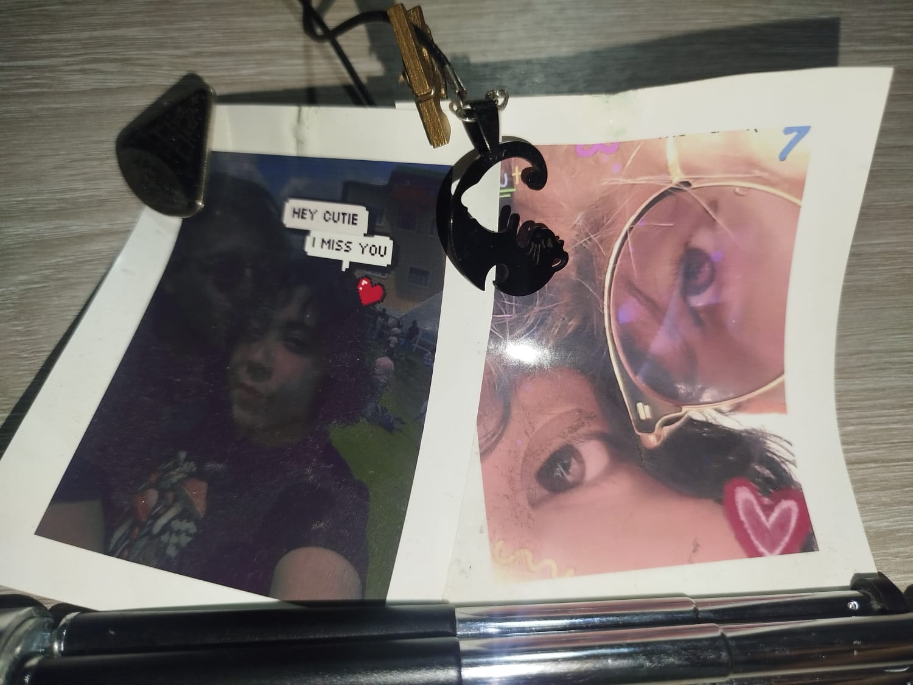
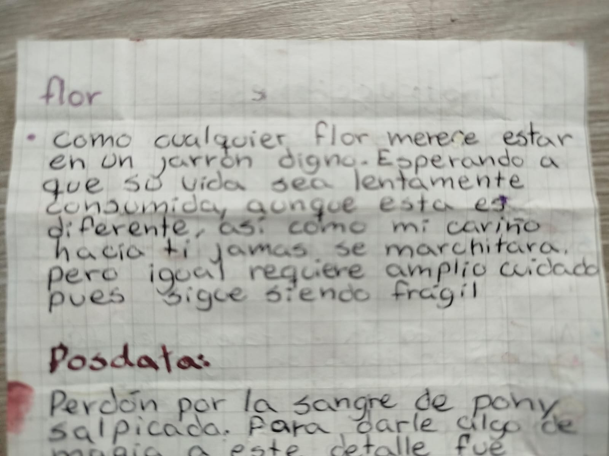
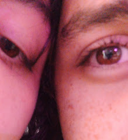
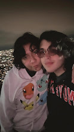
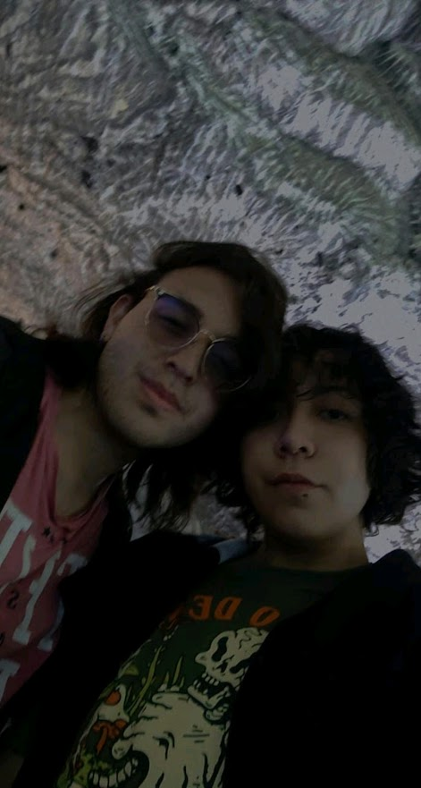
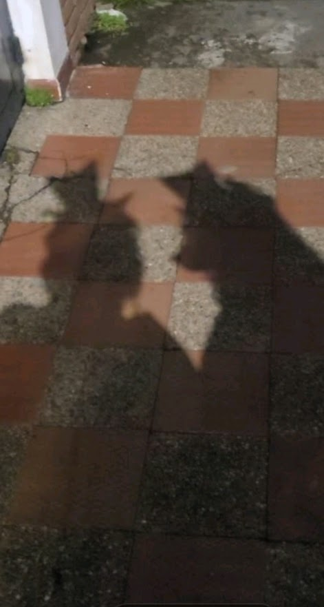
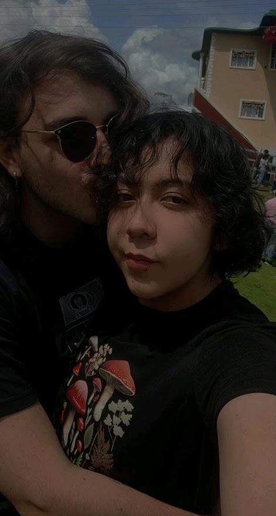
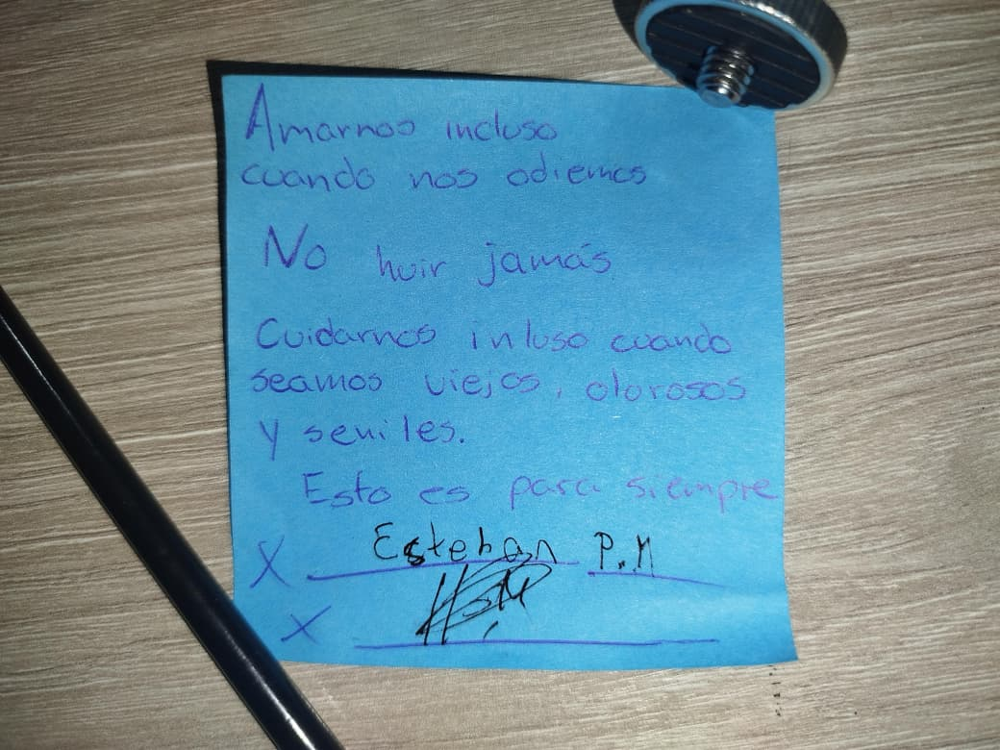

Entre los confines del universo, los granos de arena,
millones de constelaciones e incontables bacterias...
1
PRÓLOGO
Hongos y Estrellas
Hay dos vidas.
Dos vidas ajenas, dos vidas separadas.
Dos vidas, lejanas.
2
1 / 15
Usa las flechas ← → o las teclas de dirección
DESPUÉS DE TODO
Nuestra historia continúa
Y después de todas estas páginas donde quise plasmar nuestra historia en un descarado resumen,
quedan recuerdos que ningún planeta
podría contar por nosotros. Porque nosotros somos esos recuerdos, y me encantaria seguir construyendo mas.

Aún hay dos gatos que deben volver a encontrase.

Tu cariño no se marchita, sin embargo no lo he cuidado y sabía que era fragil. Lo hare. Lo enmendare.

Dos planetas diferentes, mismo color de ojo, destello diferente. Mismo amor, misma esperanza.

Con un mundo brillante detras y aun asi podemos mirarnos a sin estarnos viendo, encima de montañas y en frío.

Estando juntos nos viertimos, nos amamos. La distancia es muy fuerte y aun asi, aqui seguimos. (pinche piercing pero igual te amo)

Algún día, hare que halloween sea nuestro dia otra vez. porque incluso en la dimension de las sombras, nuestro amor es evidente.

Extraño abrazarte, incluso estando estresado porque mis padres quieren saturarnos de actividades y no dejarnos estar. Nuestra relacion, como la casa. Ahora esta de cabeza pero, espero poder enderezarla junto a ti.

Fue una promesa. Esto es para siempre. Asi que tambien hare que se haga realidad y espero tu tambien puedas intentarlo.
Te amo y quiero seguirte amando, para tener una vida contigo. Juntos funcionando incluso cuando uno caiga.
Y perdon por faltar en muchas cosas. Se que has credio, has cambiado y ahora no te gusta quien eres, pero estare
esperando como penelope a odiseo, porque mi hombre hoy esta perdido y luchando contra monstruos mas grandes y feroces
que el. Así que si no pueod intervenir, esperare. Esperare para que podamos construir nuestro planeta. Ser un lugar
de descanso para tu ser y alma, y yo tambien poder descansar en ti cuando necesite hacerlo.
Te amé, te amo, y quiero seguirte amando.